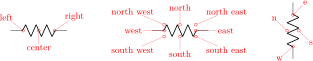
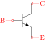
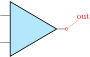
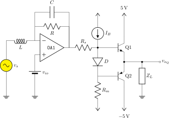
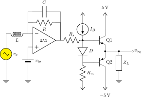
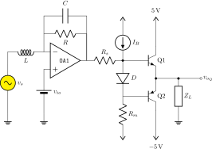
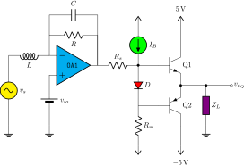

CircuiTikZ
version 1.8.6-unreleased (2026/02/10)
3 The components: usage
Components in CircuiTikZ come in two forms: path-style, to be used in a to[component,... path specifications, and node-style, which will be instantiated by a node[component,...] specification.
All the shapes defined by CircuiTikZ are pgf nodes, so they are usable in both pgf and TikZ.
3.1 Path-style components
The path-style components are used as shown below:
\begin{circuitikz}
\draw (0,0) to[#1=#2, options] (2,0);
\end{circuitikz}
where #1 is the name of the component, #2 is an (optional) label, and options are optional labels, annotations, style specifier that will be explained in the rest of the manual.
Transistors and some other node-style components can also be placed using the syntax for bipoles. See section 4.15.10.
Most path-style components can be used as a node-style components; to access them, you add a shape to the main name of component (for example, diodeshape). Such a “node-shape name” is specified in the description of each component.
3.1.1 Anchors
Normally, path-style components do not need anchors, although they have them just in case you need them. You have the basic “geographical” anchors (bipoles are defined horizontally and then rotated as needed):

In the case of bipoles, also shortened geographical anchors exists. In the description, it will be shown when a bipole has additional anchors. To use the anchors, just give a name to the bipole element using the syntax name=myname.
\begin{circuitikz}
\draw (0,0) to[potentiometer, name=P, mirror]
++(0,2);
\draw (P.wiper) to[L] ++(2,0);
\end{circuitikz}

Alternatively, that you can use the shape form, and then use the left and right anchors to do your connections.
\begin{circuitikz}
\draw (0,0) node[potentiometershape, rotate=-90](P)
{};
\draw (P.wiper) to[L] ++(2,0);
\end{circuitikz}
3.1.2 Border anchors
Bipoles have also installed generic border anchors — that means, anchors that start at an angle. For complexity reason, these are for most of the components simply a generic enclosing rectangle (even for most of the round ones!9). They interact in a non-trivial way with the and keys, so it’s best not to use them directly.

You can notice that the border anchors are a bit spaced out (this is useful because those anchors are used to position labels and annotations). You can override this if you need to reach exactly the border (whatever could that mean depends on the component) by using the key bipoles/border margin, which is a number that states how much the enclosing border is stretched out (default value is 1.1). For example, setting \ctikzset{bipoles/border margin=1} will make the border anchor coincide with the geographical shape:
The above diagram has been obtained with the code:
\def\showbordersfornode#1{%
\begin{circuitikz}[baseline, scale=0.8, transform shape]
\node[#1shape, name=bip] at(0,0) {};
\foreach \a in {0,30,...,359} \draw[red] (bip.\a) -- ++(\a:0.7)
node[font=\tiny, fill=white, inner sep=0.5pt]{\a};
\foreach \a in {15,45,...,359} \draw[red] (bip.\a) -- ++(\a:0.4);
\node [font=\ttfamily\small, black, below] at (bip.-90)
{\detokenize\expandafter{#1}};
\end{circuitikz}}
\ctikzset{bipoles/border margin=1}
\showbordersfornode{generic} \showbordersfornode{resistor}
\showbordersfornode{fulldiode} \showbordersfornode{vsource}
\showbordersfornode{capacitivesens}
3.1.3 Relative coordinates
As noticed by user septatrix, although full relative coordinates after a component work as expected when using ++(x,y)-style coordinates, often there are problems when using the +(x,y)-style coordinates (which are supposed to set a temporary relative coordinate and then going back to the starting point).
These kind of coordinate have in practice little use for the building of circuits, so have been only (very) lightly tested; avoid them if you can — the behavior will depend not only on the CircuiTikZ version, but also on the TikZ layer underneath.
This behavior, although not optimal, was standard in to operation in plain TikZ before version 3.1.8; it was changed by Henri Menke in later versions. Notice that the change revealed a problem in CircuiTikZ that should hopefully be fixed in v1.4.1; for more details see this issue on GitHub.
You can see from the example below (notice the blue curve using a spline line). If all the vertical lines are at the left, the manual has been compiled with a new CircuiTikZ and TikZ. Otherwise, the red and/or blue curve will have the vertical line at the right (which in principle is wrong).
In the last (green) example, you can see a workaround using local path and the key current point is local that will work for older (and do not create problems in newer) versions.
Plotted using \TikZ\ version \pgfversion{} and Circui\
TikZ\ version \pgfcircversion{}.
\begin{tikzpicture}
\draw[color=red] (0,0) to[R] +(2,0) +(0,0) --
++(0,-1);
\end{tikzpicture}
\qquad
\begin{tikzpicture}
\draw[color=blue] (0,0) to[out=30, in=120] +(2,0)
+(0,0) -- ++(0,-1);
\end{tikzpicture}
\qquad
\begin{tikzpicture}
\draw[color=purple] (0,0) to[] +(2,0) +(0,0) --
++(0,-1);
\end{tikzpicture}
\qquad
\begin{tikzpicture}
\draw[color=green!50!black] (0,0)
{[current point is local] to[R] +(2,0)} +(0,0)
-- ++(0,-1);
\end{tikzpicture}
3.1.4 Customization
Pretty much all CircuiTikZ relies heavily on pgfkeys for value handling and configuration. Indeed, at the beginning of circuitikz.sty and in the file pfgcirc.define.tex a series of key definitions can be found that modify all the graphical characteristics of the package.
All can be varied using the \ctikzset command, anywhere in the code.
Note that the details of the parameters that are not described in the manual can change in the future, so be ready to use a fixed version of the package (the ones with the specific number, like circuitikz-0.9.3) if you dig into them.
3.1.4.1 Components size Perhaps the most important parameter is bipoles/length (default 1.4 cm, you can use the currently set value with \ctikzvalof{bipoles/length}), which can be interpreted as the length of a resistor (including reasonable connections): all other lengths are relative to this value. For instance:
\ctikzset{bipoles/length=1.4cm}
\begin{circuitikz}[scale=1.2]\draw
(0,0) node[anchor=east] {B}
to[short, o-*] (1,0)
to[R=20<\ohm>, *-*] (1,2)
to[R=10<\ohm>, v=$v_x$] (3,2) -- (4,2)
to[cI=$\frac{\si{\siemens}}{5} v_x$, *-*] (4,0)
-- (3,0)
to[R=5<\ohm>, *-*] (3,2)
(3,0) -- (1,0)
(1,2) to[short, -o] (0,2) node[anchor=east]{A}
;\end{circuitikz}
\ctikzset{bipoles/length=.8cm}
\begin{circuitikz}[scale=1.2]\draw
(0,0) node[anchor=east] {B}
to[short, o-*] (1,0)
to[R=20<\ohm>, *-*] (1,2)
to[R=10<\ohm>, v=$v_x$] (3,2) -- (4,2)
to[cI=$\frac{\si{\siemens}}{5} v_x$, *-*] (4,0)
-- (3,0)
to[R=5<\ohm>, *-*] (3,2)
(3,0) -- (1,0)
(1,2) to[short, -o] (0,2) node[anchor=east]{A}
;\end{circuitikz}
The changes on bipoles/length should, however, be globally applied to every path, because they affect every element — including the poles. So you can have artifacts like the one in the second line below:
\begin{circuitikz}[
bigR/.style={R, bipoles/length=3cm}
]
\draw (0,3) to [bigR, o-o] ++(4,0);
\draw (0,1.5) to [bigR, o-o] ++(4,0)
to[R, o-o] ++(2,0); % will fail here
\draw (0,0) to [R, o-o] ++(4,0);
\end{circuitikz}
Several groups of components, on the other hand, have a special scale parameter that can be used safely in this case (starting with 0.9.4 — more groups of components will be added going forward); the key to use will be explained in the specific description of the components. For example, in the case of resistors you have resistors/scale available:
\begin{circuitikz}[
bigR/.style={R, resistors/scale=1.8}
]
\draw (0,3) to [bigR, o-o] ++(4,0);
\draw (0,1.5) to [bigR, o-o] ++(4,0)
to[R, o-o] ++(2,0); % ok now
\draw (0,0) to [R, o-o] ++(4,0);
\end{circuitikz}
Never use scale, xscale or yscale in a path-style component (i.e., inside a to[...]) command.
3.1.4.2 Mirroring and flipping path-style components
To change the orientation of path-style components, never use xscale=-1 nor yscale=-1. That will mess up the path completely. Use the mirror and invert options:
\begin{tikzpicture}[N/.style={
font=\tiny\ttfamily, above}]
\draw (0,0) to [put] ++(0,2)
node[N]{no modifier};
\draw (1,0) to [put, mirror] ++(0,2)
node[N]{mirror};
\draw (2,0) to [put, invert] ++(0,2)
node[N]{invert};
\draw (3,0) to [put, mirror, invert] ++(0,2)
node[N]{both};
\end{tikzpicture}
3.1.4.3 Thickness of the lines (globally)
The best way to alter the thickness of components is using styling, see section 3.3.3. Alternatively, you can use “legacy” classes like bipole, tripoles and so on — for example changing the parameter bipoles/thickness (default 2). The number is relative to the thickness of the normal lines leading to the component.
\ctikzset{bipoles/thickness=1}
\tikz \draw (0,0) to[C=1<\farad>] (2,0); \par
\ctikzset{bipoles/thickness=4}
\tikz \draw (0,0) to[C=1<\farad>] (2,0);
3.1.4.4 Shape of the components (on a per-component-class basis)
The shape of the components are adjustable with a lot of parameters; in this manual we will comment the main ones, but you can look into the source files specified above to find more. Notice however that the “internal” parameters, the ones not commented in this manual, are not part of the public interface so they can disappear or change in future versions.
It is recommended to use the styling parameters to change the shapes; they are not so fine-grained (for example, you can change the width of resistor), but they are more stable and coherent across your circuit.
\tikz \draw (0,0) to[R=1<\ohm>] (3,0); \par
\ctikzset{resistors/width=2}
\tikz \draw (0,0) to[R=1<\ohm>] (3,0);
To change the height, you can use (locally) the class scale parameter and the width; you can even define a style that will work across the resistor styles:
\ctikzset{american}
\tikz \draw (0,0) to[R=1<\ohm>] (4,0);
\ctikzset{tallR/.style={
resistors/scale=2, resistors/width=0.4}}
\tikz \draw (0,0) to[R=1<\ohm>, tallR] (4,0);
\ctikzset{european}
\tikz \draw (0,0) to[R=1<\ohm>, tallR] (4,0);
3.1.5 Descriptions
The typical entry in the component list will be like this:
 resistor: resistor, american style, type: path-style, nodename: resistorshape. Aliases: R, american resistor. Class: resistors.
resistor: resistor, american style, type: path-style, nodename: resistorshape. Aliases: R, american resistor. Class: resistors.
pR: potentiometer, american style, type: path-style, nodename: potentiometershape. Aliases: pR, american potentiometer. Class: resistors.
where you have all the needed information about the bipole, with also no-standard anchors. If the component can be filled it will be specified in the description. In addition, as an example, the component shown will be filled with the option fill=cyan!30!white:
 ammeter: Ammeter, type: path-style, fillable, nodename: ammetershape. Class: instruments.
ammeter: Ammeter, type: path-style, fillable, nodename: ammetershape. Class: instruments.
The Class of the component (see section 3.3) is printed at the end of the description.
Most path-style components can be used as a node-style components; to access them, normally you add a shape to the main name of component (for example, diodeshape). Sometimes though the “node name” is different, so it is specified in the description of each component.
3.2 Node-style components
Node-style components (monopoles, multipoles) can be drawn at a specified point with this syntax, where #1 is the name of the component:
\begin{circuitikz}
\draw (0,0) node[#1,#2] (#3) {#4};
\end{circuitikz}
Explanation of the parameters:
#1: component name10 (mandatory)
#2: list of comma-separated options (optional)
#3: name of an anchor (optional)
#4: text written to the text anchor of the component (optional)
Notice: Nodes must have curly brackets at the end, even when empty. An optional anchor (#3) can be defined within round brackets to be addressed again later on. And please don’t forget the semicolon to terminate the \draw command.
Also notice: If using the \tikzexternalize feature, as of TikZ 2.1 all pictures must end with \end{tikzpicture}. Thus you cannot use the circuitikz environment.
Which is OK: just use the environment tikzpicture: everything will work there just fine.
3.2.1 Mirroring and flipping
Mirroring and flipping of node components is obtained by using the TikZ keys xscale and yscale. Notice that these parameters also affect text labels, so they need to be un-scaled by hand. Notice that you do not use xscale or yscale in a path-style component, see section 3.1.4.2 for that case.
\begin{circuitikz}[scale=0.7, transform shape]
\draw (0,3) node[op amp]{OA1};
\draw (3,3) node[op amp, xscale=-1]{OA2};
\draw (0,0) node[op amp]{OA3};
\draw (3,0) node[op amp, xscale=-1]{%
\scalebox{-1}[1]{OA4}};
\end{circuitikz}

To simplify this task, CircuiTikZ has three helper macros —\ctikzflipx{}, \ctikzflipy{}, and \ctikzflipxy{}, that can be used to “un-rotate” the text of nodes drawn with, respectively, xscale=-1, yscale=-1, and scale=-1 (which is equivalent to xscale=-1, yscale=-1).
\begin{circuitikz}[scale=0.7, transform shape]
\draw (0,3) node[op amp]{OA1};
\draw (3,3) node[op amp, xscale=-1]{\ctikzflipx{OA
2}};
\draw (0,0) node[op amp, yscale=-1]{\ctikzflipy{OA
3}};
\draw (3,0) node[op amp, scale=-1]{\ctikzflipxy{OA
4}};
\end{circuitikz}
3.2.2 Anchors
Node components anchors vary a lot across the various kinds of components, so they will be described better after each category is presented in the manual. In general all components have geographic anchors (north, north west, …), but most of the other anchors are very component-specific.
3.2.2.1 Text anchors Starting from version v1.8.2, you can always refer to the node text of a component using the anchor .text which will point to the baseline of the left edge of the typeset text. Using these anchors is considered an advanced topic, and should be avoided in the normal usage of the package.
3.2.3 Descriptions
The typical entry in the component list will be like this:
Cute spdt down with arrow, type: node (node[cute spdt down arrow]{}). Class: switches.
npn, type: node (node[npn]{}). Class: transistors.
If the component can be filled it will be specified in the description. In addition, as an example, the component shown will be filled with the option fill=cyan!30!white:
Plain amplifier, type: node, fillable (node[plain amp]{}). Class: amplifiers.
Sometime, components will expose internal (sub-)shapes that can be accessed with the syntax
 Rotary switch, type: node (node[rotaryswitch](N){}). Class: switches.
Rotary switch, type: node (node[rotaryswitch](N){}). Class: switches.
The Class of the component (see section 3.3) is printed at the end of the description.
3.3 Styling circuits and components
You can change the visual appearance of a circuit by using a circuit style different from the default. For styling the circuit, the concept of class of a component is key: almost every component has a class, and a style change will affect all the components of that class.
Let’s see the effect over a simple circuit11.
\begin{circuitikz}[american, cute inductors]
\node [op amp](A1){\texttt{OA1}};
\draw (A1.-) to[short] ++(0,1) coordinate(tmp) to[R, l_=$R$] (tmp -| A1.out) to[short] (A1.out);
\draw (tmp) to[short] ++(0,1) coordinate(tmp) to[C=$C$] (tmp -| A1.out) to[short] (A1.out);
\draw (A1.+) to [battery2, invert] ++(0,-2.5) node[ground](GND){};
\draw (A1.-) to [L=$L$] ++(-2,0) coordinate(tmp) to[sV, l=$v_s$, fill=yellow] (tmp |-GND) node[ground]{};
\draw (A1.out) to[R=$R_s$] ++(2,0) coordinate(bb) to[I, l_=$I_B$, invert] ++(0,2) node[vcc](VCC){};
\draw (bb) to[D, l=$D$, *-] ++(0,-2) coordinate(bb1) to[R=$R_m$] ++(0,-2) node[vee](VEE){};
\draw (bb) --++(1,0) node[npn, anchor=B](Q1){Q1};
\draw (bb1) --++(1,0) node[pnp, anchor=B](Q2){Q2};
\draw (Q1.E) -- (Q2.E) ($(Q1.E)!0.5!(Q2.E)$) to [short, *-o, name=S] ++(2.5,0)
node[right]{$v_{o_Q}$};
\draw (S.s) to[european resistor, l=$Z_L$, *-] (S.s|-GND) node[ground]{};
\draw (Q1.C) -- (Q1.C|-VCC) node[vcc]{\SI{5}{V}};
\draw (Q2.C) -- (Q2.C|-VEE) node[vee]{\SI{-5}{V}};
\end{circuitikz}
This code, with the default parameters, will render like the following image.

3.3.1 Relative size
Component size can be changed globally (see section 3.1.4.1), or you can change their relative size by scaling a family of components by setting the key class/scale; for example, you can change the size of all the diodes in your circuit by setting diodes/scale to something different from the default 1.0.
Remember that if you use a global scale (be sure to read section 1.8!) you change the coordinate only, so using scale=0.8 in the environment options you have:

If you want to scale all the circuit, you have to use also transform shape:

Using relative sizes as described in section 3.1.4.1 enables your style for the circuit. For example, setting:
\ctikzset{resistors/scale=0.8, % smaller R
capacitors/scale=0.7, % even smaller C
diodes/scale=0.6, % small diodes
transistors/scale=1.3} % bigger BJTs
Will result in a (much more readable in Romano’s opinion) circuit:
Warning: relative scaling is meant to work for a reasonable range of stretching and shortening, so try to keep your scale parameter in the 0.5 to 2.0 range (more or less). Bigger or smaller value can result in awkward shapes.
3.3.2 Fill color
You can also set a default fill color for the components. You can use the keys class/fill (which defaults to none, no fill, i.e. transparent component) for all fillable components in the library.
If you add to the previous styles the following commands:
\ctikzset{
amplifiers/fill=cyan,
sources/fill=green,
diodes/fill=red,
resistors/fill=violet,
}
you will have the following circuit (note that the first generator is explicitly set to be yellow, so if will not be colored green!):

Please use this option with caution. Although two-colors circuits can be nice, using more than that can become rapidly unbearable. Old textbooks used the two-color style quite extensively, filling with a kind of light blue like blue!30!white “closed” components, but that was largely to hinder black-and-white photocopying…
3.3.3 Line thickness
You can change the line thickness for any class of component in an independent way. The default standard thickness of components is defined on a loose “legacy” category (like bipoles, tripoles and so on, see section 3.1.4.3); to override that you set the key class/thickness to any number. The default is none, which means that the old way of selecting thickness is used.
For example, amplifiers have the legacy class of tripoles, as well as transistors and tubes. By default they are drawn with thickness 2 (relative to the base linewidth). To change them to be thicker, you can for example add to the previous style
\ctikzset{amplifier/thickness=4}

Caveat: not every component has a “class”, so you have to play with the available ones (it’s specified in the component description) and with the absolute values to have the circuit following your taste. A bit of experimentation will create a kind of style options that you could use in all your documents.
3.3.4 Style files
When using styles, it is possible to use style files (see section 3.3.5), that then you can load with the command \ctikzloadstyle. For example, in the distribution you have a number of style files: legacy, romano, example. When you load a style name name, you will have available a style called name circuit style that you can apply to your circuits. The last style loaded is not enacted — you have to explicitly do it if you want the style used by default, by putting for example in the preamble:
\ctikzloadstyle{romano}
\tikzset{romano circuit style}
Please notice that the style is at TikZ level, not CircuiTikZ— that let’s you use it in the top option of the circuit, like:
\begin{circuitikz}[legacy circuit style,
..., ]
...
\end{circuitikz}
If you just want to use one style, you can load and activate it in one command with
\ctikzsetstyle{romano}
The example style file will simply make the amplifiers filled with light blue:
\begin{circuitikz}
\draw (0,0) node[op amp]{OA1};
\end{circuitikz}
\ctikzloadstyle{example}
\begin{circuitikz}[example circuit style]
\draw (0,0) node[op amp]{OA1};
\end{circuitikz}
The style legacy is a style that set (most) of the style parameters to the default, and romano is a style used by one of the authors; you can use these styles as is or you can use them to learn to how to write new file style following the instructions in section 3.3.5. In the next diagrams, the left hand one is using the romano circuit style and the rigth hand one the legacy style.
3.3.5 Style files: how to write them
The best option is to start from ctikzstyle-legacy.tex and edit your style file from it. Then you just put it in your input path and that’s all. If you want, you can contribute your style file to the project.
Basically, to write the style example, you edit a file named ctikzstyle-romano.tex with will define and enact TikZ style with name example circuit style; basically it has to be something along this:
% example style for circuits
% Do not use LaTeX commands if you want it to be compatible with ConTeXt
% Do not add spurious spaces
\tikzset{example circuit style/.style={%
\circuitikzbasekey/.cd,%
amplifiers/fill=blue!20!white,
},% end .style
}% end \tikzset
%
\endinput
This kind of style will add to the existing style. If you want to have a style that substitutes the current style, you should do like this:
\ctikzloadstyle{legacy}% start from a known state
\tikzset{romano circuit style/.style={%
legacy circuit style, % load the legacy style
\circuitikzbasekey/.cd,%
% Resistors
resistors/scale=0.8,
[...]
}}
If you want to add a setting to your style file that has been recently added to the package (for example, the thyristor compact shapes added in 1.3.5), but you want your style file to be still compatible with older versions of CircuiTikZ, you can use the .try statement:
% Diodes
diodes/scale=0.6,
diodes/thickness=1.0,
thyristor style/.try=compact,
Or, in case of new values of existing “choice” keys, you can use the syntax:
% Logic ports
logic ports/ieee/.try,
% this way of setting the key does nothing if ieee option
% does not exist; logic ports/.try=ieee does not work
% if the key exists but the value is not defined
logic ports/scale=1.0,
3.4 Subcircuits
Starting from version 1.3.5, there is support for generating sub-circuits, or circuit blocks. The creation and use of subcircuits is somewhat limited, to keep them simple and easy to define and maintain.
A subcircuit is basically a path (and just one path!) of generic TikZ instructions, with a series of accessible coordinates that behave more or less like anchors in the “real” shapes. The basic limitation is that a subcircuit can be moved, replicated and placed around but it can’t be easily personalized. Even if scaling and rotation is in principle possible, it is not easily done. Nevertheless, they can be quite useful to build complex components and reusable blocks.
3.4.1 Subcircuit definition
To define a block you use the \ctikzsubcircuitdef macro; this macro has 3 arguments:
-
• the first argument is the name of the subcircuit, and it must form a valid TeX command name when prepended with a backslash: so just letters (no spaces, nor numbers, nor symbols like underscores, etc.);
-
• the second one is a comma-separated list of anchor names; here you can use whatever you can use for naming a coordinate or a node (so it’s much more relaxed than the first one);
-
• finally, the commands that will draw the circuit. You must suppose you are in a \draw command, with the start coordinate already set-up. You can (and should) use #1 as the name of the current node, and you must define the coordinates of all the anchors listed before as coordinate(#1-anchorname). You should not finish the path here and use only relative coordinates or named ones.
Let’s see that with an example:
\ctikzsubcircuitdef{optovishay}{in 1, out 1, in 2, out 2, center}{%
% reference anchor is -center
coordinate(#1-center)
(#1-center) +(-1.2,-1) rectangle +(1.2,1)
(#1-center) ++(-1.2,0.8) coordinate (#1-in 1)
(#1-center) ++(-1.2,-0.8) coordinate (#1-in 2)
(#1-center) ++(1.2,0.8) coordinate (#1-out 1)
(#1-center) ++(1.2,-0.8) coordinate (#1-out 2)
(#1-center) ++(0,1) coordinate (#1-up)
(#1-in 1) -- ++(0.5,0) coordinate(#1-tmp)
to[leD*, diodes/scale=0.6, led arrows from cathode]
(#1-tmp|- #1-in 2) -- (#1-in 2)
(#1-out 1) -- ++(-0.5,0) coordinate(#1-tmp)
to[pD*, diodes/scale=0.4, mirror] ++(0,-0.5)
edge[densely dashed] ++(0,-0.533) ++(0,-0.566)
to[pD*, diodes/scale=0.4,mirror] (#1-tmp|- #1-out 2) -- (#1-out 2)
% leave the position of the path at the center
(#1-center)
}
Our element is a symbol for an optocoupler; in this case is the symbol used for one cell of the double Vishay vo1263 device.
The name of the subcircuit is optovishay — notice we can use only letters here, upper or lowercase, and nothing more. Then we have a series of anchor names; here we can use letters, numbers, spaces and some symbol — but avoid the dot (.) and the hyphen (-). Additionally, the anchor named subckt@reference is reserved and shouldn’t be used. If you use spaces, be on the safe side and never use two or more consecutive spaces.
After that, you have to draw your subcircuit as if you were into a \draw command, starting from a generic point. In this case, we decide to draw the circuit around this generic point so that it will result to be the center of the block; so as a first thing, we “mark” the position of the center anchor, with coordinate(#1-center). The #1 will be substituted with the specific name of the subcircuit’s instance later — so if you then call one instance of the optocoupler opto1, that coordinate will be called opto1-center.
We continue by defining all our anchors (there is no need to do that at the start, but it’s handy because then you can use them). You must define all the anchors!
Important: all the coordinates used must be either relative, or named in the form #1-something; absolute coordinate will not work when instantiating the block. The block is thought to be used inside a path specification, so the idea is not to end the path — that means that changing line styles or colors is at best difficult. You can still use edges, though (see 8.2).
After that, we draw our circuit; in this case a LED and a couple of smaller photodiodes will do. We also define a coordinate -up (you can define more coordinates, in addition to the anchors, or name elements with name=#1-something for later access) for adding text.
3.4.2 Using the subcircuit
To use the subcircuit, an additional step is needed. Somewhere you have to activate it. This is needed to calculate the relative positions of anchors using the current set of style parameters. The normal place is to activate it just before usage; to do that you use the command \ctikzsubcircuitactivate with the name of the subcircuit. That will define a new command, \nameofthesubcircuit that you can use then in your paths.
So to check your subcircuit while defining it you can use this simple snippet:
\ctikzsubcircuitactivate{optovishay}
\begin{tikzpicture}
\draw (0,0) \optovishay{one}{};
\node [above] at (one-up) {O1};
\draw[color=blue] (one-out 1) -- ++(1,0)
\optovishay{two}{in 1};
\node [above] at (two-up) {O2};
\end{tikzpicture}
3.4.2.1 Scaling, flipping and rotating subcircuits
To scale and rotate a subcircuit you have to include it into a scope with the appropriate scale and rotation commands. Notice that, as in general in CircuiTikZ, global scales that affect rotation works only if transform shape is issued (see 1.8); nesting transform shape normally works, but it has been really lightly tested.
\ctikzsubcircuitactivate{optovishay}
\begin{tikzpicture}[scale=0.8, transform shape]
\draw (0,0) \optovishay{three}{};
\draw (three-out 1) -- ++(0.5,0) coordinate(here);
\begin{scope}[xscale=-1,rotate=-45,transform shape]
\draw (here) \optovishay{four}{out 1};
\end{scope}
\draw[blue] (three-out 2) -| (four-out 2);
\end{tikzpicture}
3.4.3 Parameters in subcircuits
There are no additional parameters definable for subcircuit shapes; this is a bit of a pity, because sometimes they could be useful, especially for labels of objects. Given the need to use transform shape to translate and rotate them, though, it is better not to add invariant-direction things (like text) into the subcircuit, unless you are sure you will just translate them. One possibility is to use additional macros and anchors for positioning, like in the following example.
Suppose you have defined
\ctikzsubcircuitdef{divider}{in, out}{%
coordinate (#1-in) to[R, l=~, name=#1-rh, -*] ++(2,0)
coordinate(#1-tmp) to[R, l=~, name=#1-rl] ++(0,-2)
node[tlground]{} (#1-tmp) --++(0.5,0) coordinate(#1-out)
}
then you can additionally define:
\newcommand{\mydiv}[4]{
\divider{#1}{#2} (#1-rh.n) node[above]{#3}
(#1-rl.n) node[right]{#4} (#1-out)
}
And finally do:
\begin{tikzpicture}
\ctikzsubcircuitactivate{divider}
\draw (0,0) \mydiv{a}{in}{$R_1$}{$R_2$};
\draw (a-out) -- \mydiv{b}{in}{$R_3$}{$R_4$};
\end{tikzpicture}
3.4.4 Using pics (with parameters)
Since v1.8.012 you can also use the standard TikZ pics as subcircuits, with the advantage to be able to define (up to 9) parameters.
\tikzset{pics/divider/.style n args={2}{
code={
\draw (0,0) coordinate(-in) to[R=#1, -*] ++(2,0)
coordinate(-corner)
to[R=#2] ++(0,-2) node[tlground]{}
(-corner) -- ++(0.5,0) coordinate(-out);
}}}
\begin{tikzpicture}[]
\draw (0,0) pic(one){divider={$R_1$}{$R_2$}}
(one-out) pic(two){divider={$R_3$}{$R_4$}};
\node [above] at (one-corner) {$v_{12}$};
\end{tikzpicture}
The main limitation of pics is that natively they do not have options to place them with internal anchors, like the anchor=… options of nodes. Fortunately, Andrew Stacey’s fine tikzmark library provides that function. You have to just add \usetikzlibrary{tikzmark} in your preamble, and then add the option to the pic invocation:
... pic[pic anchor=(-corner)] {divider=...}
For example, suppose you want to attach your divider to a BJT base:
\begin{tikzpicture}[]
%% \usetikzlibrary{tikzmark}
\draw (0,0) node[npn](Q){}
(Q.B) pic[pic anchor=(-out)]{divider={$R_1$}{$R
_2$}};
\end{tikzpicture}
Notice that pic anchor needs an additional compilation pass to position the subcircuit correctly. This double pass is usually not a problem, but be prepared to have the pic positioned incorrectly after the first run. For the curious, this is needed because before drawing the pic, ‘tikzmark‘ does not know where the anchors are. So, it saves their positions and adjusts them in the next run. With native subcircuits, the call to \ctikzsubcircuitactivate is doing the same for every possible anchor before using it.13
In some extreme conditions, when the pic is complex and there are many calculations (especially true in case of rotations), it could happens that the two-pass compilation can become unstable: that is, every time a slightly, invisible difference in coordinates is written out. That can confuse automatic compilations tools, like for example latexmk, and induce a very high number of recompilations or even errors. With a recent enough tikzmark14 you can avoid this by rounding the precision of the coordinate calculations to, say, 2 decimal places (which is 0.01 pt, basically invisible in normal conditions) with the option:
... pic[tikzmark round=2, rotate=45, pic anchor=(-corner)] {divider=...}
Finally, if you want to rotate the pic (warning: lightly tested!) remember that you need transform shape to have a correct behavior.
\begin{tikzpicture}[]
\draw (0,0)
pic(one){divider={$R_1$}{$R_2$}} (one-out)
pic[rotate=45, transform shape](two)
{divider={$R_A$}{$R_B$}};
\end{tikzpicture}
12 See this issue for more details; be warned that they will not work at all in earlier versions.
13 Native shapes do not need that because you must define the anchor positions explicitly when defining the shape.
14 The version must be greater than v1.15, not yet released on May 30, 2025: see this GitHub issue for details; use a development version if you need it — the instructions are on the same GitHub project.
3.4.5 Using macros
Sometimes, a good old LaTeX macro can solve a problem instead of designing a new component. For example, GitHub’s user Patrick Jansky asked for a generic “chopper” block;15 Unfortunately, this kind of block is quite difficult to implement as a node: it should change size and orientation on the base of the “port” terminals you need.
In this case, probably an old-fashioned macro, using partway coordinate specifiers, 16 could be the best option for this task. Below, one possible example (not optimized at all!).
\NewDocumentCommand{\ChopperByTerminals}{O{} O{0.2cm} m m m}{%
% #1 -> options to the draw command
% #2 -> half width
% by default is drawn to the right (if vertical), to the left if #2 is negative
% If horizontal, by default is above, below if #2 is negative
% #3 -> terminal A on port 1
% #4 -> terminal B on port 2
% #5 -> name for the "anchors"
\coordinate(#5-P1A) at (#3);
\coordinate(#5-P1B) at (#4);
% the center of the block is midway P1A to P1B, at distance #2 at 90 clockwise
% degrees from the center of the line
\coordinate(#5-C1) at ($(#5-P1A)!0.5!(#5-P1B)$);
\coordinate(#5-C) at ($(#5-C1)!#2!90:(#5-P1B)$);
\coordinate(#5-P2B) at ($(#5-P1A)!2!(#5-C)$);
\coordinate(#5-P2A) at ($(#5-P1B)!2!(#5-C)$);
\coordinate(#5-T1A) at ($(#5-P1B)!1.2!(#5-P1A)$);
\coordinate(#5-T1B) at ($(#5-P1A)!1.2!(#5-P1B)$);
\coordinate(#5-T2A) at ($(#5-P2B)!1.2!(#5-P2A)$);
\coordinate(#5-T2B) at ($(#5-P2A)!1.2!(#5-P2B)$);
\coordinate(#5-CKA) at ($(#5-T1A)!0.5!(#5-T2A)$);
\coordinate(#5-CKB) at ($(#5-T1B)!0.5!(#5-T2B)$);
\coordinate(#5-C2) at ($(#5-P2A)!0.5!(#5-P2B)$);
\draw [draw, thick, fill=white, #1] (#5-T1A) rectangle (#5-T2B);
\draw [draw, thick, line join=round, #1] (#5-P1A) -- (#5-P2B) --
(#5-P1B) -- (#5-P2A) -- (#5-P1A);
}
You can use this definition as follows, for example:
\begin{tikzpicture}[]
\node[op amp](A) at (0,0) {};
\ChopperByTerminals[draw=red][-0.2cm]{A.-}{A.+}{
chopper in}
\draw [red, <-] (chopper in-CKA) -- ++(0,.5)
node[above]{$f_c$};
\ChopperByTerminals[draw=red]{[xshift=1.2cm]A.-}{[
xshift=1.2cm]A.+}{chopper out}
\draw [red, <-] (chopper out-CKA) -- ++(0,.5)
node[above]{$f_c$};
%Try another one
\draw (4,1) node[npn](Q1){} (7,1) node[npn, xscale
=-1](Q2){};
\coordinate (Qcenter) at ($(Q1.E)!0.5!(Q2.E)$);
\ChopperByTerminals[][-0.2cm]{Q1.E}{Q2.E}{cE}
\draw [<-] (cE-CKA) -- ++(-0.5,0) node[left]{$f_
c$};
% pseudo-anchors
\ChopperByTerminals[draw=blue][-1cm
]{4,-1.25}{7,-1.25}{C}
\foreach \a in {P1A, P1B, P2A, P2B, CKA, CKB, C, C1,
C2}
\node[circle, draw, inner sep=1pt, pin={[font=\
tiny, fill=white]60:C-\a}]
at (C-\a) {};
\end{tikzpicture}